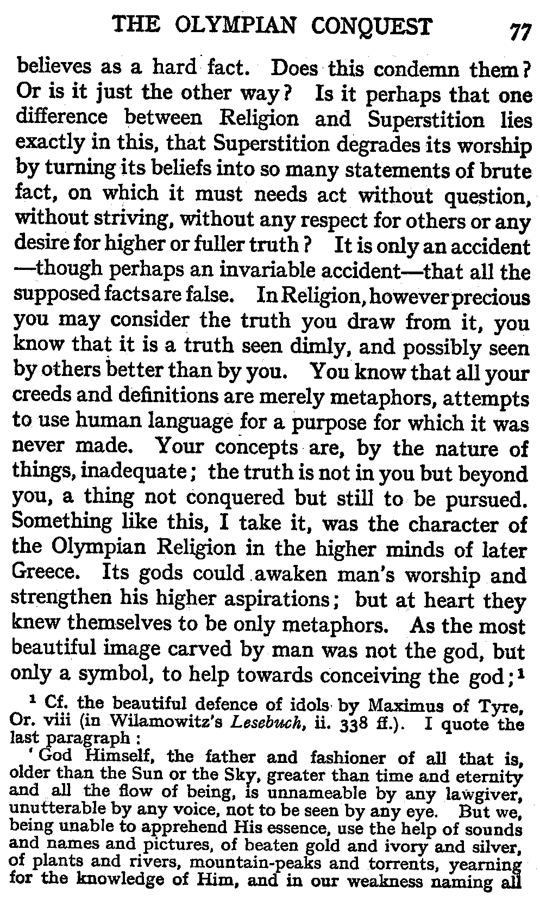
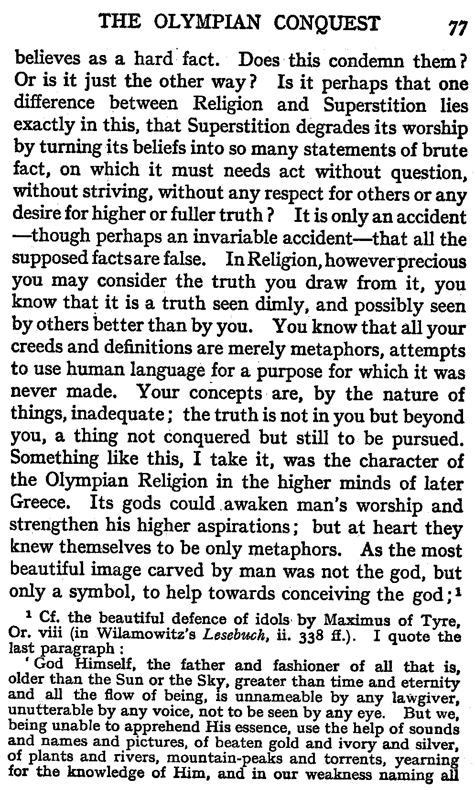
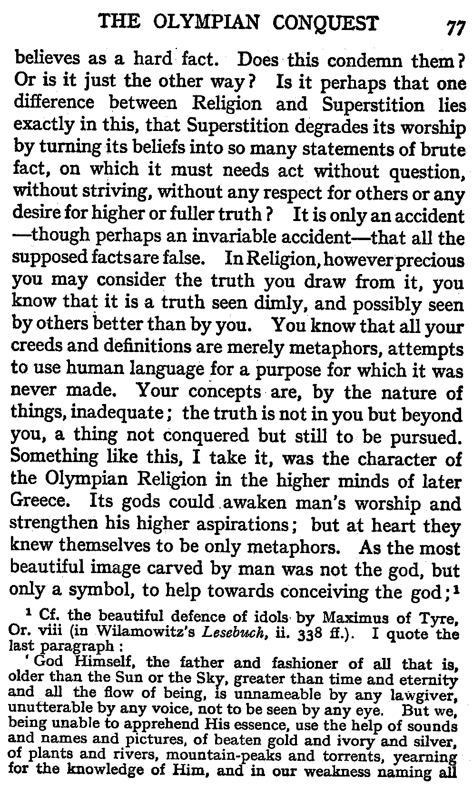

 |  |
| A's friend, A-2, loses by theft a mysterious object, X, supposed to bring good fortune to its possessor, and A seeks to recover X for A-2 * A finds the thief, A-5, by looking for a man who suddenly becomes prosperous. A-5, stealing X, is inspired by superstition to put forth efforts which make him prosperous ** |